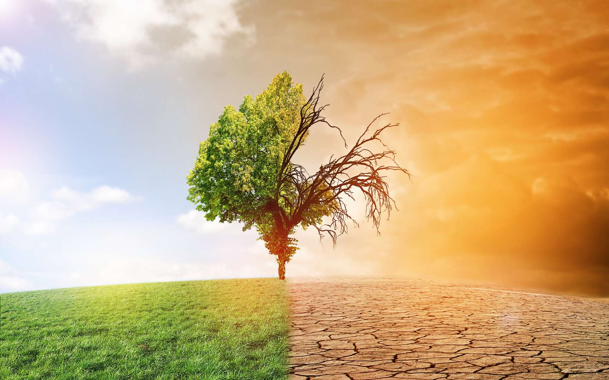

La température moyenne en 2020 est à égalité avec celle de 2016 pour être l'année la plus chaude jamais enregistrée, selon la NASA. une équipe de chercheurs de l'université de l'Arizona (États-Unis) estime que, si rien n'est fait pour limiter le réchauffement climatique,un tiers des espèces animales et végétales pourrait disparaître dans les 50 années à venir. c'est un sujet préoccupant alors Le changement climatique fait référence aux changements à long terme du climat qui se produisent sur des décennies, des siècles ou plus. Elle est causée par une augmentation rapide des gaz à effet de serre dans l'atmosphère terrestre due principalement à la combustion de combustibles fossiles (charbon, pétrole et gaz naturel, par exemple). Ces gaz qui retiennent la chaleur réchauffent la Terre et les océans, ce qui entraîne une élévation du niveau de la mer, une modification du type de tempête, une modification des courants océaniques, une modification des précipitations, une fonte des neiges et des glaces, des épisodes de chaleur extrême, des incendies et la sécheresse.
 De manière générale, les changements climatiques peuvent être divisés en deux groupes :